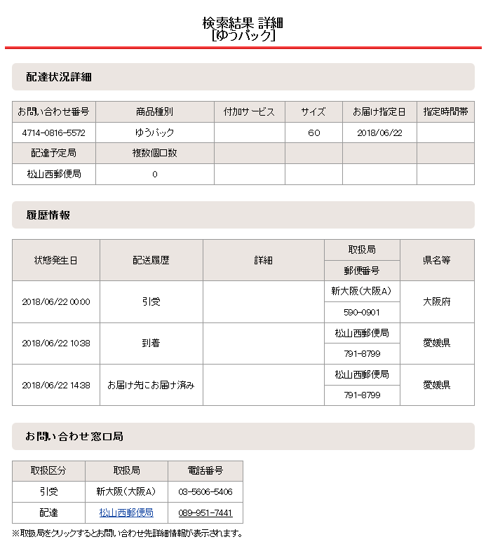
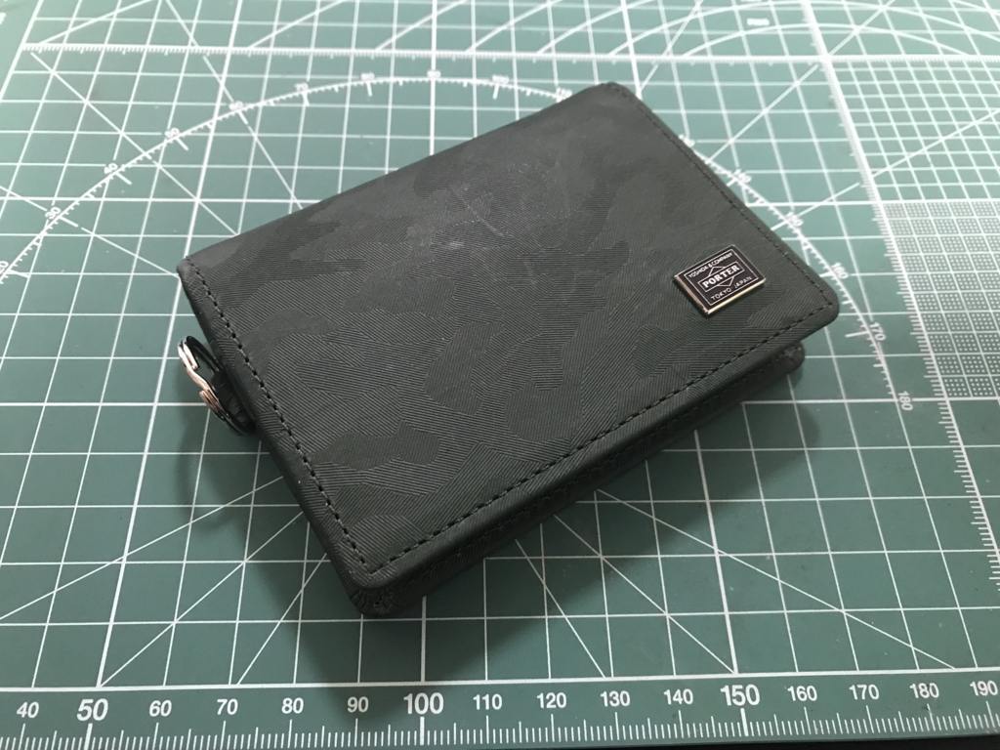
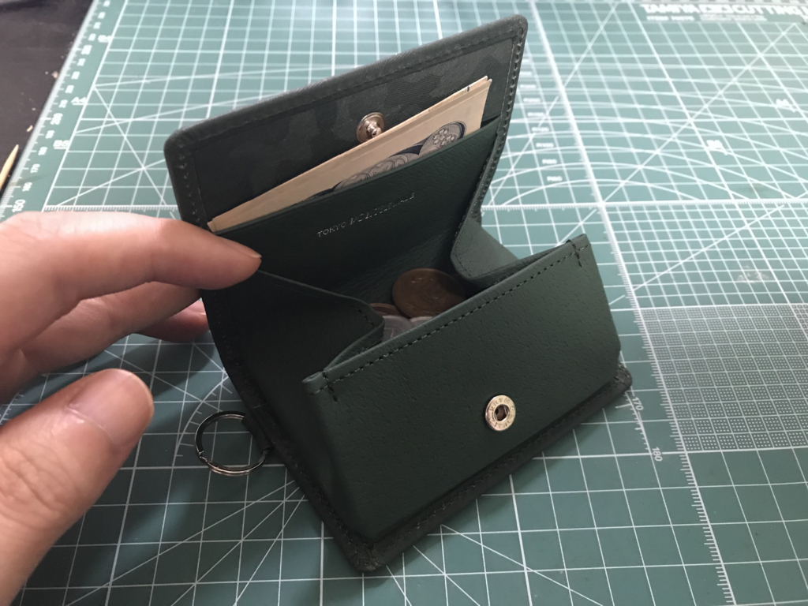

6月22日：ウチの家が Amazon の翌日配送エリアになったから、ポーターの小銭入れを買った
公開日：
愛媛・松山、大勝利！ pic.twitter.com/rshx0EIR5r
— だるやなぎ 帝国元帥 (@daruyanagi) 2018年6月21日
仕事を終えて Amazon 漁りをしていると、住んでいる地域が Amazon お急ぎ便の翌日配送エリアになったというお知らせがでた。マジかよ……内地からだと瀬戸内海渡って通関せなあかんのに……翌日届くのかよ！
さっそく試したくなったので、近所のコンビニでも買えるゴミ袋（買い合わせ対象品）と以前から買おうか悩んでカードの“あとで買う”につっ込んでおいたポーターの小銭入れを注文してみた。時間が時間だったので、注文の確定が日付が変わる頃になっちゃったんだけど、果たして「次の日」に来るのか……！？

お昼過ぎに、フツーにきましたわ。すげー、日本郵便のおっちゃん、ありがとう！（いつもはクロネコなんだけど、今回はなぜかゆうパックだった）
![[ポーター]PORTER ワンダー WONDER コインケース 小銭入れ 342-03842 グリーン/30](https://images-fe.ssl-images-amazon.com/images/I/417IA7E2JML._SL160_.jpg "[ポーター]PORTER ワンダー WONDER コインケース 小銭入れ 342-03842 グリーン/30")
小銭入れもなかなかいいもので気に入った。

最近、なんとなく札入れと小銭入れを分けて持つようになり、Amazon でやっすい 1,000 円ちょいの財布をテキトーに買って使っていたのだけど、札入れはともかく、小銭入れは使いにくくて仕方なかった。新しく買った小銭入れは札入れの5倍以上のお値段がするけど、がばちょと大きく開くスクウェアタイプで、小銭が見やすくこぼれない。手のひらサイズなので、ズボンのポケットでも、和服の懐でも邪魔にならない。

カードが一枚と、折りたたんだお札がちょっと入るのもいい（内側のポッケはカードを入れるとボタンが止まらなくなるので札専用だな）。キーチェーンを付けるリングもついてるけど、これは使わないかな。なんかぶら下げておくか。

ちなみに、長財布はこれを使ってる。ポリウレタンレザーでお世辞にも高級とは言えないんだけど、薄くてカードが割と入るし、実用的。先代小銭入れと違い、買い替えようっていう気が起きないのだから、なんだかんだで気に入っているんだろうと思う。
これに切り替えるまでは妹に買ってもらった小銭入れのある長財布を使っていたのだけど、小銭入れの部分だけ劣化が早い感じがしたんだよね。あと、最近は小銭を使うことが減ってきたので、長財布を小銭でじゃらじゃらさせておくのがイヤになった。やってみると、1000円未満の決済はポケットの小銭入れ、それ以上はカバンに入れた長財布と棲み分けできて結構いい。小銭入れには常に1000円札を補充しておくように癖を付けとくといいと思う。